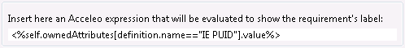

The label of the requirements can be customized through an Acceleo expression. The default expression allows to show as its label the value of a requirement's attribute named "IE PUID".
The scope of data to import can be customized in the Importer preference page:

To choose the set of attributes to be imported, check the corresponding line in the tree (some attributes are defined as 'mandatory' and cannot be deselected).
Attribute1Name:defaultSelectionState Attribute2Name:defaultSelectionStateThen add the properties file in the first part of the preference dialog by clicking on "Add file".
In the screenshot above, the following file was used:
Requirement\ Author:true Requirement\ Identifier:false Requirement\ State:false
The list of attributes to be imported can be enhanced by contributing to a extension point (see Programmer's Guide).